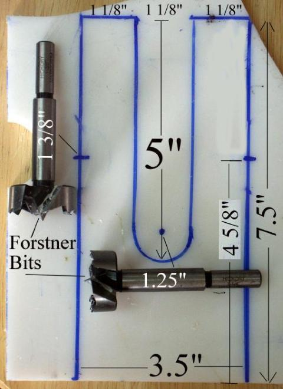
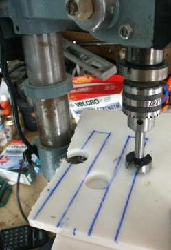
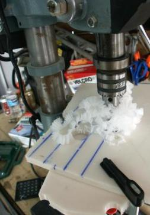

| Strongback - Stations | Menu Previous Page Next Page | |
|  |


Drilling the Stations
1. Both stations are identical. Forstner bits are used to drill out the center bottom section, and the openings for the chines. The openings allow the stringers to snap onto cross sectiions 1 and 8 during frame construction. The openings can also be cut out with a jigsaw instead of drilling.
In the photo above (center), the third hole is about to be drilled with a 1 3/8" Forstner bit. The photo to the right shows the HDPE being removed. The photo on the left displays the cutout dimensions for both stations. Note: The dimensions shown are for the Sea Ranger. All other kayaks will vary somewhat. |
|